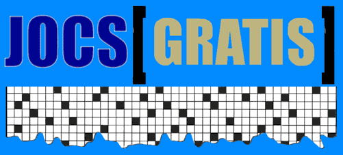

|
![pàgina inici JOCS [stap]](logojocsstap.gif)
|
HORITZONTALS: 1. El de Sant Andreu és a la Plaça Orfila. 2. Alguns la tenen molt dura. Melodiós, que canta bé. 3. Es trenca en arribar a la platja. Em sembla que agafo por. 4. Victòria romana. Parenta de la glucosa. 5. Posar a punt el ganivet. Aversió capgirada. 6. Bossa de malla que reté els cabells. Sí, a més és el meu germà bessó. 7. Revestits tots ells de draps. Sant molt bo, per breu. 8. Enmig de la fira. Deixar estès a terra, com mort. Al capdamunt de la Rambla de Sant Andreu. 9. El volant del vaixell. Afaitar, potser per no caure. 10. Una gran bossa trobada a l’antic camp de l’Espanyol. Cadàver.
|
|
VERTICALS: 1. Intimidats per l’abominable home de les neus. 2. Un bon home, en Joan. Dura com el ferro. 3. Fibrociment de les fàbriques. El míster és amic meu. 4. El carrer més nadalenc de Sant Andreu. Una por de ja fa temps. 5. Al final del carrer Recesvint. No sé si s’ha casat però ja té casa. La més vista al carrer Virgili. 6. Fa més 2003 anys. Esmicola la fritura. 7. Assassino el company de postres de la mel. El continent groc. 8. La N de les matemàtiques. Que n’és d’ase, aquest. 9. Es passen la vida buscant llocs on viure. Robar fora de la cantina. 10. Posa música a la tempesta. Algunes poden contenir perla. | |||
| en
col·laboració amb 
JOCS [GRATIS]
Sant Andreu de Palomar |
|
joc
003
mots encreuats |
| anirem
penjant nous jocs |
Tornar